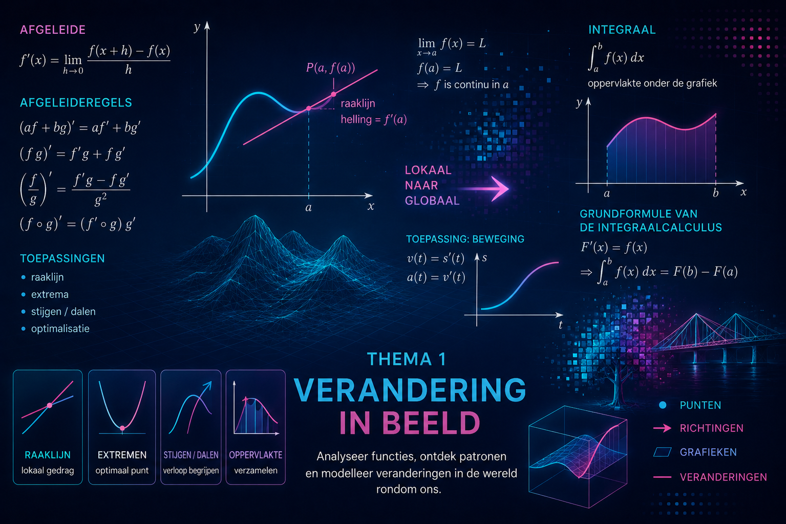
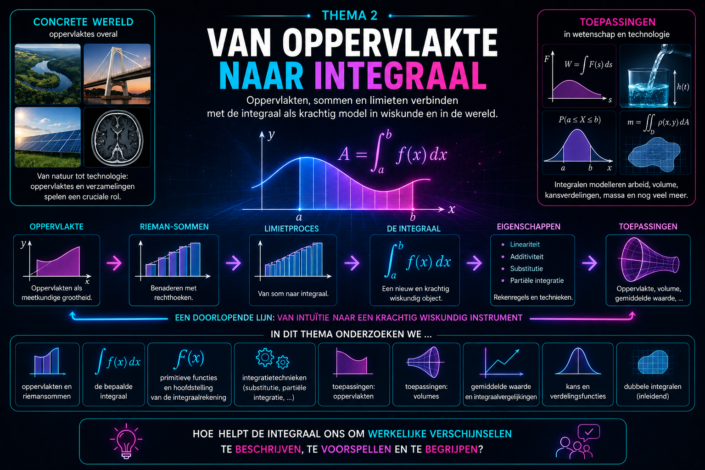

Waarom beginnen we met verandering?
In wetenschappen draait veel om verandering. Een grootheid neemt toe of af, een grafiek wordt steiler of vlakker, een temperatuur verandert, een populatie groeit, een trilling herhaalt zich of een systeem bereikt een maximum of minimum.
Om zulke veranderingen wiskundig te beschrijven, gebruiken we functies en afgeleiden.
Je hebt in het vijfde jaar al geleerd hoe veeltermfuncties zich gedragen, hoe je gemiddelde en ogenblikkelijke verandering kunt onderscheiden en hoe een afgeleide informatie geeft over een functie. Je gebruikte de eerste en tweede afgeleide om stijgen en dalen, extrema en buigpunten te onderzoeken.
In dit eerste thema halen we die kennis opnieuw naar boven. Niet om alles opnieuw vanaf nul te leren, maar om de belangrijkste ideeën en technieken opnieuw scherp te stellen. Ze vormen immers de basis voor bijna alles wat later in deze cursus volgt.
We besteden opnieuw aandacht aan:
Deze opfrissing blijft bewust compact. Het doel is dat je het wiskundige gereedschap uit het vijfde jaar opnieuw vlot kunt gebruiken, zodat we daarna kunnen verderbouwen naar nieuwe functieklassen, nieuwe afleidingstechnieken en uiteindelijk integralen.
Analyse begint dus niet met een nieuwe formule. Ze begint met een vertrouwde vraag:
Hoe verandert een functie, en wat kunnen we daaruit afleiden?
In dit hoofdstuk frissen we een centraal idee uit de analyse op: hoe beschrijf je hoe
snel een functie verandert?
We vertrekken van de gemiddelde verandering over een interval en herkennen
daarin de helling van een secant. Door het interval steeds kleiner te maken,
komen we opnieuw bij de ogenblikkelijke verandering, het afgeleid getal en de
raaklijn.
Zo leggen we de basis om verderop nieuwe functies en nieuwe afleidingstechnieken te
onderzoeken.
Verandering en het afgeleid getal – Functies in verandering
Thema1-Opfrissing/Afgeleid-getal
Oefeningen — Verandering en het afgeleid getal – Functies in verandering
Thema1-Opfrissing/Oefeningen-Afgeleid-getal
In het vorige hoofdstuk bekeken we de afgeleide in één punt: het afgeleid getal
\(f'(a)\).
Nu laten we het punt variëren. Zo ontstaat een nieuwe functie, de afgeleide functie \(f'\),
die in elk punt beschrijft hoe snel de oorspronkelijke functie verandert.
We frissen ook op hoe je de eerste en tweede afgeleide van veeltermfuncties berekent.
Die technieken vormen de basis voor het functieonderzoek in het volgende
hoofdstuk en voor de nieuwe afleidingstechnieken die later in deze module
volgen.
De afgeleide functie – Functies in verandering
Thema1-Opfrissing/Afgeleide-functie
Oefeningen — De afgeleide functie – Functies in verandering
Thema1-Opfrissing/Oefeningen-Afgeleide-functie
Verloop van functies – Functies in verandering
Thema1-Opfrissing/Verloop-functies
Oefeningen — Verloop van functies – Functies in verandering
Thema1-Opfrissing/Oefeningen-Verloop-functies

H
oe bepaal je exact de oppervlakte van een gebied met een gekromde grens? En hoe kan dezelfde wiskunde gebruikt worden om allerlei kleine bijdragen samen te voegen tot één totaal?
In dit thema ontwikkelen we stap voor stap het begrip integraal. We vertrekken vanuit oppervlakte, bouwen het idee van een integraal op en ontdekken vervolgens hoe primitieve functies ons toelaten integralen efficiënt te berekenen.
Thema2-Oppervlakken/1-Oppervlakken Thema2-Oppervlakken/1-Oppervlakken-oefeningen Thema2-Oppervlakken/2-Integraal_def Thema2-Oppervlakken/2-Integraal_def-oefeningen Thema2-Oppervlakken/3-Primitieve_functies Thema2-Oppervlakken/3-Primitieve_functies-oefeningen